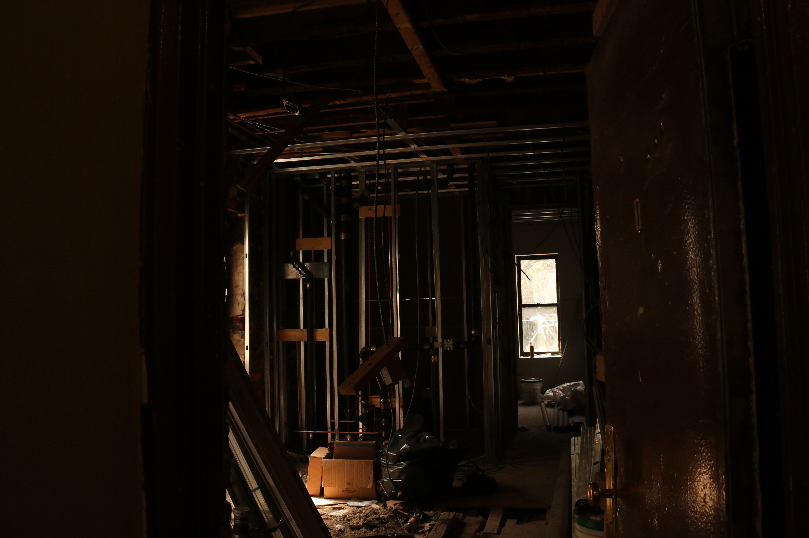

Rent Stabilization
About three-eighths of the New York City's housing is rent-regulated--1.1 million apartments with 2.7 million tenants. Strict rent control applies in 71,000 apartments built before 1947. The rest are rent-stabilized, which means rent increases are limited to percentages mandated each year by the city's Rent Guidelines Board. This means there is a large difference in these rents and the market rates. That makes for an attractive investment for real estate developers, if you can get tenants out of their apartments so those apartments can be deregulated.
Rent control and rent stabilization will expire on June 15 of 2019 if they are not renewed, and the protections and rights that rent-stabilized tenants have will be gone.
An Attractive Investment
The difference between the depressed, stabilized rents and the market-rate rents is often dramatic.

Photo Credit: Saaman Moghadam
The strategy to buy rent-stabilized apartments means that they sometimes may use illegal and frequently unethical means to get tenants out of the stabilized apartments, since one of the only ways to destabilize an apartment is when there is a vacancy.
Tenant Distress: Tenant Unrest
But the nature of rent-stabilized apartments means tenants are afforded some extra legal rights, including the ability to form a tenant association.
The Portfolio
Emerald Equity has 49 buildings in their portfolio in East Harlem.
The portfolio was originally consolidated in the 80s under Steven Kessner, notorious slumlord. Since then, it has been passed around by various hedgefunds, changes which tenants say were hard to keep track of.
Colloquially, it's known as the Dawnay, Day Portfolio.
Buildings 1661 Park, 231 E 117, and 322 E 117 already have tenant associations.
Where does Emerald Equity fit in?
The complaints made by tenants from Emerald Equity's buildings are just a small picture of tenant distress in East Harlem.
But Emerald Equity only has 49 buildings out of a total 3078 in East Harlem.
It's bad in East Harlem...
but under Emerald Equity, it's worse.
This is how many complaints per unit Emerald Equity has, compared to the per-unit rate in all of East Harlem.
This was found by combining unique BBLs with unitsres from Pluto in both Harlem and Emerald Equity.
Class A Violations
HPD (Housing Preservation and Development) Class violations are confusing: maybe by design!
Class A violations are non-hazardous. There's been a marked uptick since Emerald Equity's purchase of the buildings in December, 2016.
Examples:
-No peephole in the entrance door of the dwelling unit;
-Keeping of pigeons, chickens, etc. unlawfully;
-Improper seat for a water closet;
-No street number on the front of the dwelling
Class B Violations
Class B violations are hazardous.
Examples:
-Inadequate lighting facilities for public halls or stairs;
-Owner has not provided an approved smoke detector in dwelling unit;
-Unlawful bars or gates on windows opening to fire escapes
Class C Violations
Class C violations are immediately hazardous.
Examples:
-Inadequate supply of heat and hot water
-Rodents
-Peeling lead paint in dwellings where a child under 7 resides
-Broken or defective plumbing fixtures*
-Defective plaster*
-Defective faucets
Categories of HPD Violations
Lead, Mold, Gas, Heat, Pests.
Lead is shown in red. Why so many new lead complaints? Most complaints have to do with new construction in recently vacated apartments-- and the dust that accompanies it, filled with lead from decades of paint.